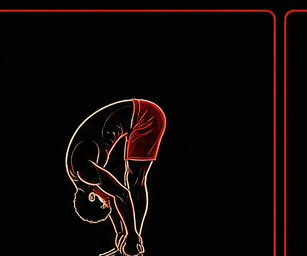
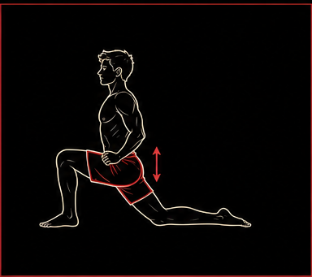
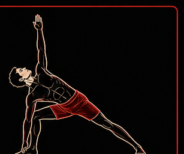
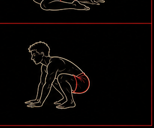
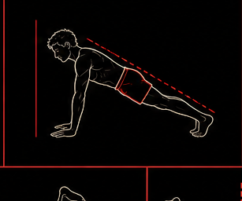
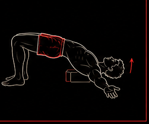

Feet, legs, pelvis
Use these for heat, balance, hip range, and leg strength. The feet should show clear weight-bearing.
Learning resource
A practical map of common yoga posture families, written for Smile Asana. Use it to choose movements, understand what each category trains, and keep avatar images closer to clean human alignment.
Plain-language approach
A useful pose image should show the main joint action clearly: where the spine is, how the pelvis is placed, what the arms support, and whether the legs are straight, bent, balanced, folded, or loaded. These standards help future avatars look more like real practice positions instead of vague stretching shapes.
Pose families
Use these for heat, balance, hip range, and leg strength. The feet should show clear weight-bearing.
Use these for folding, rotation, hip opening, and breath work. The sitting base should look stable.
Use belly-down shapes for backbends, shoulder extension, and posterior-chain strength.
Use lying-down shapes for hamstrings, twists, core control, and nervous-system downshifting.
Use these for plank, crow, side plank, handstand, and pressing patterns. Hand contact should be obvious.
Use these for wall line, handstand drills, forearm balance, and upside-down body awareness.
Avatar form rules
These are original Smile Asana standards for generating or replacing pose avatars. They are based on common alignment principles, not copied from another website.

Show a clear hip hinge, softened knees when needed, relaxed neck, and the torso folding toward the legs.

Show the front knee tracking over the foot, the back leg reaching long or kneeling, and the pelvis facing forward.

Show grounded feet, long spine, clear side-body length, and no collapsed front shoulder.

Show hands pressing into the ground, elbows organized, body weight shifted forward, and legs clearly attached to the arm line.

Show stacked wrists, shoulders, ribs, hips, and ankles. Avoid banana-back shapes unless the drill specifically trains backbending.

Show the chest opening with support from legs or arms. Avoid pinched low-back shapes and disconnected limbs.